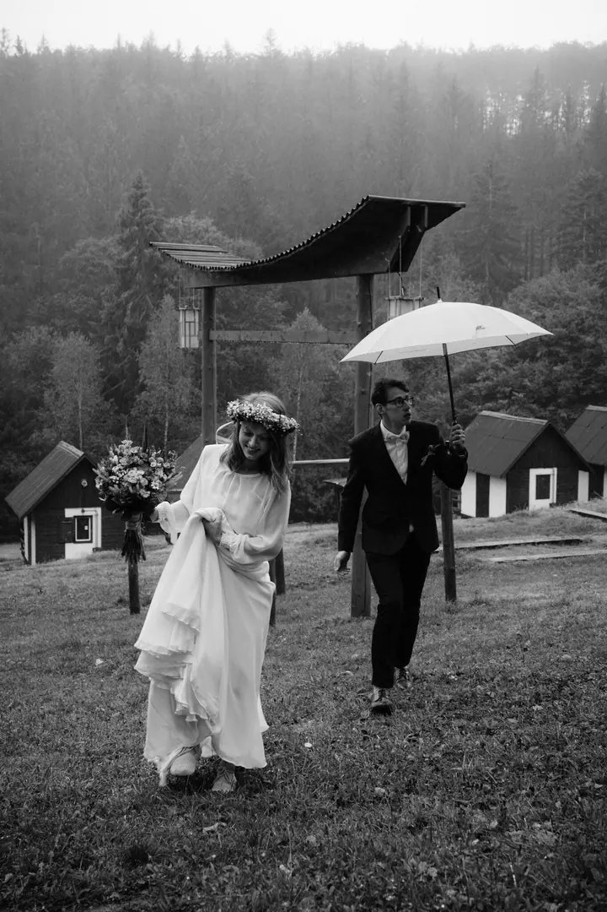

Svatební reportáž
Jako manželé společně dokumentujeme dění a emoce během celého svatebního dne. Fotíme černobíle, bez velkých retuší a filtrů, a vždy ve dvou.

Černobílá svatební reportáž
Jmenujeme se Kučerovi, jsme manželé a svatby fotíme společně. Děláme černobílou reportážní fotografii bez velkých retuší a filtrů, takže na fotkách zůstane to, co se u vás opravdu dělo.
Zeptat se na termín
Jako manželé společně dokumentujeme dění a emoce během celého svatebního dne. Fotíme černobíle, bez velkých retuší a filtrů, a vždy ve dvou.
Svatba není reklama. Proto ji nefotíme jako kampaň, ale dokumentujeme dění a emoce během celého dne. Slib, dojatý pohled maminky, objetí s kamarády před kostelem, smích dětí v lavicích.
Fotíme černobíle a bez velkých retuší a filtrů. Taková fotografie dává prostor obsahu, nepodléhá trendům a je nadčasová. Za pár let vás nebude zajímat, jaký filtr byl zrovna v módě, ale kdo s vámi ten den byl a co jste prožívali.
Na svatbu přijíždíme vždy oba. Ve dvou stihneme být u nevěsty i u ženicha, v první řadě i mezi hosty, a nic podstatného nám neuteče.

Pošlete nám datum a místo svatby a pár slov o tom, jak si svůj den představujete. Ozveme se vám, jestli máme termín volný.
Probereme spolu program dne a co je pro vás důležité, ať víme, kde a kdy být.
Přijedeme oba a celý den nenápadně dokumentujeme. Nic nenarežírujeme, necháváme věci plynout tak, jak se dějí.
Vybrané snímky zpracujeme černobíle a bez velkých retuší a filtrů. Hotovou reportáž vám předáme online.
Černobílá fotografie dává prostor obsahu, nepodléhá trendům a je nadčasová. Pozornost zůstává u lidí a emocí, ne u barev a filtrů.
Vždy dva, fotíme spolu jako manželé. Uvedené sazby jsou proto za dva fotografy.
Děláme reportáž, takže hlavně dokumentujeme, co se opravdu děje. Svatba není reklama a nemusíte nám nic hrát.
Bez velkých retuší a filtrů. Fotky zpracujeme černobíle tak, aby zůstaly pravdivé a vydržely i za mnoho let.